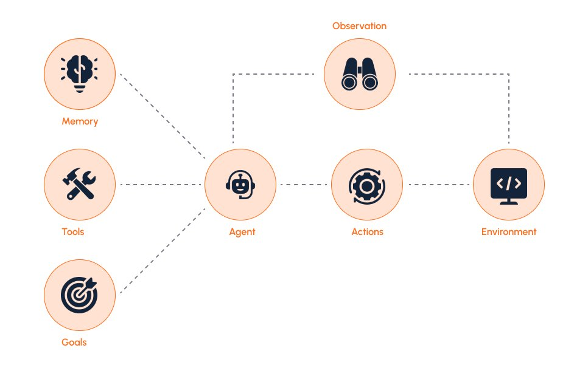
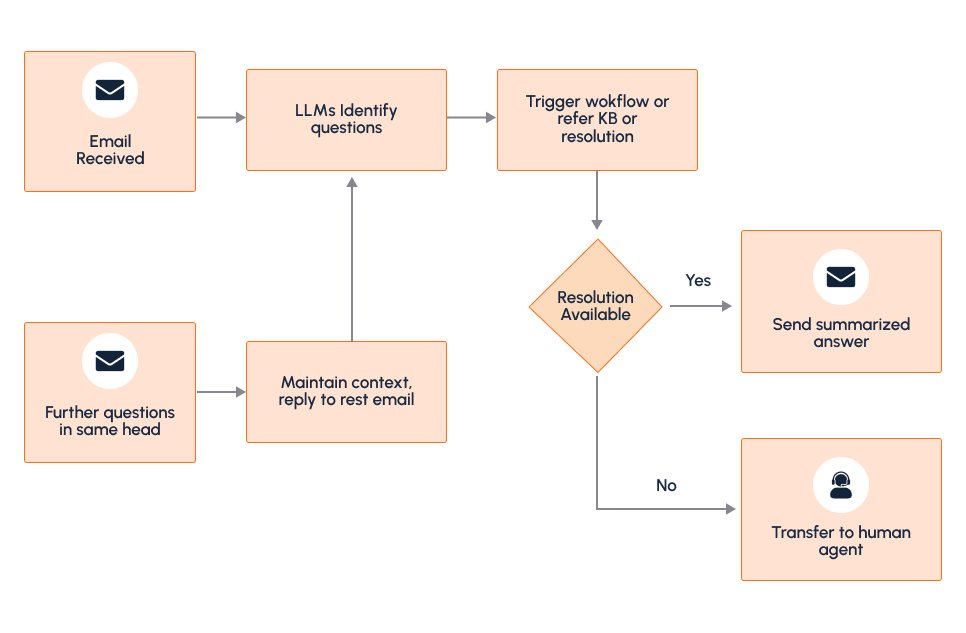

Artificial Intelligence and Machine Learning have come so far in the past decade and we are seeing how AI is disrupting almost every industry you can possibly imagine. AI agent development is a good example of that and the space has matured so much in today’s day and age that even major institutions like banks are incorporating it into their customer service process. This is because an AI agent can speak with your customers and resolve their problems faster than a human agent can. Additionally, AI agents can be trained on real data pertaining to your business and unlike humans who are susceptible to mistakes AI agents can learn everything about your business and provide users with useful and actionable answers on the go.

This has made AI agent development a big trend in the industry and businesses are innovating the way they interact with their customers. There’s more to AI agents than just a chat bot inside your own website or application. With the advancements in technology and the fact that most communication apps provide APIs for developers to build products around them, AI agents can now be implemented in various platforms which includes social media, messengers like WhatsApp and Telegram and of course as a custom chat bot that you can use with your own platforms.
We’ll delve into all this and more about AI agent development in just a bit.
Let’s Explore The Evolution of AI Agent Development From A Business Perspective
Believe it or not AI Agents are not just a recent piece of technology that we haven’t tried before. In fact, computer scientists have been fascinated by the idea of creating chatbots since the 1960s.
The Early Days Of Automated Agents: Rule-Based Systems
Although the technology wasn’t nearly as advanced as today, MIT professor Joseph Weizenbaum created the first conversational agent called ‘ELIZA’ in 1966. Weizenbaum used scripted responses that you could trigger based on keywords people search for and the bot was actually intended to be a conversational therapist.
Although you couldn’t call it AI agent development the system was pretty neat for its time considering that it was in the early 60s and even today many businesses use keyword based chatbots of customer support and to answer frequently asked questions from users. Programs like this were called Rule-Based Systems and although they more or less serve the purpose the problems are now obvious to us. They were keyword based systems and lacked a true understanding of what the user was actually seeking.
In the period from 1970s to 1980s programmers took a shot at AI agent development for industries like healthcare and finance to answer base user queries. These were also rule-based systems and used the “if-then” logic to generate responses to questions. In many ways this was an upgrade to the earlier versions of the system but they too lacked the flexibility you need to properly connect with customers and answer their questions directly.
The Emergence Of Natural Language Processing (NLP)
People often call the 90s the golden age for computer technology because computer scientists during this period made great strides in creating complex systems that solve real world problems better. The story of AI agent development is not different. The 90s was special because the foundation for AI driven customer support was laid by the many brilliant minds who put their heart and soul into it and we had great advancements in Natural Language Processing or NLP for short.
Today, NLP is something a lot of people have heard about. Even engineering students learn about NLP in universities but in the 90s this was as advanced as you could get. If you’re new to the fancy jargon Natural Language Processing just means that anyone could speak with the chatbots using natural language we speak everyday and the chatbot will generate responses by understanding your query.
AI agent development services advanced rapidly with the integration of Natural Language Processing (NLP), as businesses recognized the value of these systems. In the beginning, Natural Language Processing was developed in the fields of linguistics and artificial intelligence, but since the technology improved a little in the 90s, more and more people started seeing the business applications. However, they were far from perfect, and even though the technology was called NLP, it actually worked on traditional keyword-based processing.
The advancement was in the fact that the chatbots could find keywords from sentences and then retrieve predefined responses. This also lacked a deep understanding of the user query’s context which is essential if you truly want to get relevant responses consistently.
The Application Of NLP Systems In Customer Support
Since AI agent development technologies were so advanced for the time and served a purpose, businesses soon started implementing them to answer basic customer queries. It could be simple, like you typing “check balance” into a text field, and the bot would show you your bank account balance. While earlier systems that we spoke about (in the 60s) could only provide you with predefined answers to questions, these systems could retrieve mapped data or take a mapped action.
If you look at their use cases they were pretty useful for customers if you implemented them correctly but their capabilities were still limited. They still couldn’t understand the context of your queries which is far from the AI agent development scene right now. These systems could only detect specific keywords or phrases from sentences and couldn’t provide you with proper responses if you did not stay within the prescribed parameters. If a user needed help with something complex or if their query was complex then human intervention was the only way to help them. Many times this would be a friction in the customer experience because more often than not customers wouldn’t use the exact keywords that the system understood.
For this reason, most of these systems were used in sectors like Telecom where users mostly required simple and straightforward answers.
Advances in Interactive Voice Response (IVR) For Automated Phone-Based Customer Support
If you look at the history of AI agent development Interactive Voice Response or IVR for short was indeed a big advancement because we still use them today. IVR is in most cases the first point of contact customers get when they call customer support and through the system they can decide whether they are happy with the responses or if they want to talk to a human customer support agent.
IVR systems are essentially automated phone menus where callers can interact with the system through simple voice or keypad inputs. In reality, IVR systems already existed in the 1970s but advancements in AI agent development during the 90s really made these systems viable for business use cases. This was a big advancement because businesses could now manage high call volumes by automating common customer requests through IVR for things like account information enquiries, billing related queries and basic troubleshooting.
Key innovations in the 90s really pushed IVR systems forward. While in the earlier parts of the 90s IVR systems could only take keypad inputs by the mid of the 90s IVR systems could recognize basic speech also. Now, this again is nowhere close to what we can do in AI agent development today like for example OpenAI’s whisper but it did allow customers to speak simple terms like “Yes,” “No” or simple words to receive responses from the IVR.
Let’s cut to the chase, IVR systems were really good for solving basic problems for customers and some situations could be completely handled by the IVR without any human intervention. However, they were not without their limitations and customers often found IVR systems frustrating if they didn’t understand the menus or if they were stuck in the infamous menu loops. You can see this even today when you call customer support and the system doesn’t have the right choices for you and you end up going back and forth between the submenus and the main menu.
The Evolution Of The Internet And The Emergence Of Email Response Systems in AI Agent Development
During the 90s something else happened for AI agent development. We had the magic of the internet and email had become the standard communication tool for businesses. And of course businesses started receiving customer service requests via email. Naturally, to handle these requests companies started creating automated email response systems. These were also simple systems where the customers would get automated email responses to their email queries. The system addressed simple requisitions like when are the store working hours or return policies for products.

Still the system was keyword based unlike what we have today with AI agent development where chatbots can understand the context of your questions. A customer would simply send an email and if the email for example had the word “return policy” in it then the system would recognize that and respond with the return policy via email. The problem here was that it wasn’t a very personal experience. When you speak to a human customer support agent they can listen to you and understand your problems in a more one on one manner. If the question was in multiple parts or if it was too complex then human intervention was the only way.
However, what this whole thing did for AI agent development is that it paved the way for more advanced technologies to be developed because we understood that automated systems are practically viable.
The Rise of Chatbots In The 2000s: A Gateway To Modern AI Agent Development
In the 2000s we understood that chatbots were a viable solution for automated customer support and this in turn drove engineers to build AIML. Don’t be confused though, ML here doesn’t mean Machine Learning. AIML was short for Artificial Intelligence Markup Language which allowed developers to write simple markup language to handle chatbot conversations by using a set of predefined rules and patterns. AI agent development really took off from here and it became more accessible for businesses.
During this time Dr. Richard Wallace created a new chatbot named A.L.I.C.E which was short for Artificial Linguistic Internet Computer Entity. A.L.I.C.E was a product of AIML and Wallace in fact developed the AIML technology to help developers create chatbots that could handle basic conversations using predefined rules and patterns. AIML works by matching a pattern with a predefined template. For instance, if the pattern is the word “Hello” in a user’s query you could program the chatbot to respond with a greeting using AI agent development.
Code Example:
<category> <pattern>HELLO</pattern> <template>Hello! How can I help you?</template> </category>
As you can imagine this allowed developers to build conversational flows for frequently asked queries that customers may have. AIML laid the foundation for these early bots and they were very popular with things like answering frequently asked questions or FAQs on business websites.
However, as you can also imagine this wasn’t perfect and the chatbots didn’t truly understand users’ queries; it was just matching words with predefined messages.
Widespread Adoption Of Online Customer Support Systems
By now, businesses understood that they could streamline the customer support process significantly by implementing conversational chatbots. AI agent development became very popular during this time and many businesses integrated live chat support systems into their websites. Before all of this, customers had to make a phone call and wait to get their issues resolved or send an email and wait for customer support to answer their queries. But now, customers could get instant responses to their queries and if they wanted to talk to an actual human agent it was easy to just route them to a human customer support agent.
The Expansion Of Chatbots On Social Media
As people started liking social media platforms like Facebook, Twitter and MySpace during the 2000s chatbots became increasingly popular. Social media was a real blessing for AI agent development because businesses started using social media to interact with their customers. Facebook messenger is a great example for this and businesses could now implement chatbots directly into the chat window of their users and quickly answer queries, send promotional content and enhance the overall engagement with their customers.
This was quite different from the customer directly going to a business’s website and using their chatbot because social media became a familiar environment for people. Pretty soon businesses integrated chatbots to every digital touch point their customers had with their business which paved the way for systems we know and use today with AI agent development.
The Advent Of Machine Learning And Advancements In NLP Technology
The 2010s was an exciting time for AI agents because there were rapid advancements in the fields of Machine Learning (ML) and Natural Language Processing (NLP). A major shift during this era is that chatbots went from being scripted and passive to understanding the context of user queries and learning from past conversations to provide better responses.
Machine Learning truly changed the game for chatbots because unlike the 90s and early 2000s chatbots could now be smart and understand human inputs in a much more profound way. AI agent development during the 2010s saw great strides because now you could train these AI Models with real world data and the AI Models can use this data to learn more about the users, how their behavior is, what their expectations are and what kind of responses they need to solve their problems.
This change was very important because the definition of Natural Language Processing is that machines should understand human language as we use it everyday. The natural language we use everyday has nuances, metaphors, sarcasm and much more. By understanding and implementing natural speech AI agent development is taken to a new height where the users’ convenience is prioritized.
The Introduction Of AI Virtual Assistants As An Innovation In AI Agent Development
Now, we’re walking into a much more familiar territory with virtual assistants. Apple launched Siri in 2011 and it was a massive shift in how people used their smartphones. Siri was an innovation because you could now give detailed voice inputs using your iPhone and Siri can carry out basic tasks like marking calendars and picking calls. Other giants in the space like Amazon and Google soon followed suit in AI agent development with Alexa and Google Assistant respectively.
It is true that AI assistants were created by these companies for personal use but this showed us that AI chatbots could be much more than just something for customer support. They could be a tool we use everyday to speed up our tasks and free up time to spend on things that matter.
Another thing that virtual assistants did was that it changed the expectations of users in terms of how they interact with technology. Convenience is one of the paramount things that customers want and AI agent development helps businesses give users this convenience and in turn dramatically boost the engagement their customers have with their business.
The Revolution Of Intelligence Virtual Assistants - The 2020s Era
By now, you may have figured out that we have been experimenting with artificial intelligence for many decades as human beings. However, the 2020s saw a dramatic change for this space with advanced NLP models like GPT and BERT. Today, we all know about GPTs or Generative Pre-Trained Transformer through OpenAI’s ChatGPT. It is a type of Large Language Model or LLM in AI agent development which basically means that it can understand and generate meaningful responses for user queries in a much more effective way.
These chatbots can handle much more nuanced conversations and provide responses according to the context of the users’ queries. They can also learn from our past conversations and generate more appropriate responses that mimic human-like interactions. These chatbots are also self-learning which is a big advancement compared to the other generation of chatbots where you had to do a lot of manual programming for AI agent development. The self-learning capability of AI Model based chatbots mean that we can train these models on large datasets and fine tune them to generate more meaningful responses.
We will talk more about the modern era of Intelligent AI Chatbots in just a while
The Modern Era Of AI Agent Development
This might be a no-brainer because of the popularity of solutions like OpenAI’s ChatGPT and Google’s Gemini. OpenAI has made great strides in this area with its ChatGPT and businesses can now leverage chatbots to help customers solve their problems. The difference? These chatbots can understand your customer’s conversations much more deeply and even differentiate between similar but different nuanced conversations through AI agent development. Another thing to note is that these chatbots can handle longer conversations and can understand a wide range of queries.
Today, developers and businesses are taking this one step further and creating chatbots for specific use cases and training AI models using real world datasets for these specific use cases. That is, instead of just training the chatbots to handle different user queries developers can now train chatbots with a wide range of data. This could be user preferences, purchase history, global trends and much more.
As a result, more and more businesses are now moving towards AI agent development and building simple to use chatbots that can answer just about any query their customers can throw at them about their business. You could say that chatbots are not just for customer support anymore. The reason we can call them “AI Agents” is that the chatbots of today are not just limited to answering questions. They can carry out tasks, give you suggestions and warn you when something goes wrong.
Now, before we dive deeper into how businesses can leverage AI agent development to help their customers better let’s see the key differences between Conversational AI and Generative AI.
Conversational AI
When you’re building AI models the objective is not to create a model that can do anything you ask it to. LLMs do something similar if you think about it because ChatGPT for example has multiple capabilities. They might be using multiple AI models to accomplish this but highly capable chatbots are out there.
However, if you want efficiency in a particular task then you have to go specific. Meaning that instead of creating AI models that can do everything AI agent development experts create and train models on specific datasets. This allows them to tailor each chatbot to the specific needs of a business or industry which ends up yielding much better results and user experience for the end customer.
Conversational AI chatbots are built similarly but they are fine tuned to handle complex conversations with customers and let them achieve their goals without going through multiple steps. These bots are more about answering a wide range of questions quickly and giving users the shortest way to achieve their desired results. This could be anything from canceling your OTT subscriptions to learning more about billing practices of products you use. Many businesses are using AI agent development to integrate chatbots into their existing products and websites because of this.
Generative AI
So, we’re now talking about the tech that has garnered so much attention in the past couple of years, Generative AI. Generative AI has all the buzz right now but what is it all about? In reality, Generative AI works similarly to Conversational AI in that you train the AI model on different datasets to generate responses. However, Generative AI allows you to create new content by just sending prompts inside the chatbot window. This could be anything like text, images, video and even audio and can be very effective in AI agent development.
Generative AI tools are powered by deep leading models which are combinations of multiple neural networks that can learn on datasets and using the available data generate new content. Just imagine that you’re planning to buy home decor and you go to an online store to purchase several items. While the conversational bot could answer your questions, what if you could upload an image of your living room and the chatbot shows you an image of how the decor items look inside your living room? There are endless possibilities for Generative AI and AI agent development when it comes to customer engagement.
How AI Agent Development Is Transforming The Way Customers Interact With Businesses
Let’s get down to business quite literally because now we’re going to talk about how AI Agents are helping businesses interact in a better way with customers. This isn’t rocket science to understand though because we see this everyday. When was the last time you used your bank’s online banking portal? You may have noticed that recently most banks are promoting their AI Agent chatbots on their websites. Banking and finance in general is a great industry for AI agent development just because of the sheer number of customer support requests that banks and financial institutions get everyday.
If you look at this chronologically, you can clearly see key points in history where advancements in AI chatbots gave us the power to build amazing automated systems that were cutting edge at their time. In the modern era of AI chatbots OpenAI has created a revolution when it comes to accessibility. As powerful as ChatGPT is, what OpenAI did was that they gave developers the ability to use APIs to integrate ChatGPT into their applications. To a normal person this might not seem like much but to people in AI agent development this meant that they could create a fully functional chatbot that’s powered by AI without building AI Models from scratch and training them. What’s more is that now you can train instances of ChatGPT with datasets for specific use cases and generate highly optimized responses seamlessly.
This innovation has enabled businesses to leverage AI Models to create a much more engaging experience for their customers where many times customers don’t even have to speak to a human agent to solve their problems. The rate at which this space is improving is lighting fast and AI agent development is now a must have for businesses who want to grow beyond the constraints of traditional customer support operations.
To break this down even further let’s look at a few real world examples here AI Agents could change the game for business.
Major Applications Of AI Agent Development For Businesses In Different Industries
Each business is unique and will have unique sets of challenges and this is true even if it is customer support because user queries and expectations will be different. Let’s look at some specific industries where AI agent development could significantly streamline operations.
1. Banking and Financial Services
The banking and finance industry is something we glanced across earlier in the blog post but there’s much more you can do in this industry than just answering customer queries.
- Customers can easily check Account and Transaction information such as balances, recent transactions and even set alerts and notifications where the built in chatbot can let you know if your account shows any activity. This is not just useful to be vigilant about unauthorized transactions but also to keep yourself informed about your financial behavior through AI agent development.
- Adding to that Fraud Detection is a great use case which is essential in today’s day and age where technology is advancing and so are the attacks. Apart from unauthorized access that we talked about, the AI chatbot can also monitor your account for potential fraudulent activity and let you know the necessary steps to take next in case your account is compromised.
- Loan and Mortgage Assistance is also a good area to implement AI chatbots. This area at one point in time was filled with mountains of paperwork and unclear directions on how to use these financial instruments. Through AI agent development you can create chatbots that can pre-qualify users for loans, explain to them in detail how these financial instruments work and easily guide them through the process.
- Another area which has a lot of potential is the Investments and Financial Advice space where you need certified people to advise customers on various financial activities. A chatbot could easily help a common customer understand investment better, show them historically well performing investments and ways to achieve their financial goals.
2. Healthcare
Patient care and medical services are great use cases for AI agent development because just like the finance industry there are billions of people around the world who need healthcare services. And it should be obvious that the customer support systems for helping patients out are not very advanced.
- You can implement AI chatbots for Primary Symptom Assessments and guide patients to the next steps according to the urgency of their symptoms.
- Chatbots are also an easy and accessible way to Book Appointments and Set Reminders especially for elderly patients with part time or no caretakers.
- In the same light AI agent development can also help by letting chatbots set reminders for taking Medication which in cases of patients with Alzheimer's, PTSD and ADHD can be a lifesaver.
- AI powered chatbots can also be an immediate line of support for people suffering from Mental Health Issues where they may not be able to talk to a human or be willing to talk to anyone.
3. E-Commerce and Retail
E-Commerce and retail is a space where AI chatbots can really shine because there is a lot of time in between visiting an online store and taking the decision to buy a product where customers will need help.
- AI agent development can help greatly with Personalized Product Recommendations where the AI system can give customers product suggestions based on their search and purchase history.
- On a much more advanced note AI chatbots can also act as a Virtual Assistant where customers can get Guided Shopping Experiences and answer questions related to products right when they are on the product page.
- Customers can also use the chatbot for Order Tracking and Notifications which is especially great if your online store has a mobile app. Which most E-Commerce websites today do.
- Handling Returns and Exchanges are always a pain in terms of the supply chain because you need human executives to arm phone lines for customer support. This can be completely transformed with AI agent development if you implement an AI chatbot that can understand the context of the users’ messages and guide them to the right path without needing to directly get on the phone with a human agent.
4. Travel and Hospitality
AI chatbots can give your customers a lot of convenience if you are in the travel and hospitality space from booking flights to creating a complete itinerary.
- Chatbots are a great way to help customers Book Flights and Hotels without them having to surf through listings. They can just send their requirements to the chatbot as a message and the chatbot can either guide them through the process or book flights for them.
- AI agent development is so advanced today that you can even let the chatbot keep track of itineraries, send reminders and provide information on check in times at hotels and airports which can be huge timesavers.
- Chatbots can also provide Restaurant Suggestions and Suggest Activities to do based on user preferences and reviews of other travels.
- Another perhaps a revolutionary area where AI chatbots would shine is for Language Assistance and Translation.
5. Education and E-Learning
Education and technology have combined to create EdTech and many businesses are trying to give learners more convenient ways to learn.
- AI agent development can help students with Personalized Study Assistance and provide them with learning resources and easy access to simplified explanations on subjects.
- Some students may not know which path to take after graduating high school and AI chatbots here can provide students with Course Recommendations and Enrollment Guidance based on their specific interests.
- AI chatbots are also great tools for Assignment Reminders and Deadlines Tracking which helps students stay organized.
- A great thing about AI chatbots is that they can provide 24/7 Support for E-Learning and this can be especially beneficial if students are located internationally.
Onging AI Agent Development Services for Business Growth
In this modern landscape, AI agent development services empowers business with smart and automated solutions to meed the requirements. From designing to deployment, these AI agents build a scalable and secure solutions.
AI Agent Design & Strategy
Well experienced AI agent development services aligns with business objectives and deliver measurable value. They assists in defining the use cases for the specific product and pick the corresponding architecture.
Conversational AI Development
The development team designs and deploys intelligent chatbots, virtual assistants, and voice assistants using Natutal Language processing. In the mean time, these agents keep the customers engaged and do boosts satisfaction.
Automation Solutions
A dedicated AI agent development company build AI agents that can understand the workflow and automate repetitive tasks. This advanced approach brings many advantages, including cost savings, reducing manual workload, and improves business efficiency.
Integration Solutions
After deployment, the AI agents seamlessly connect with third-party platforms, ERPs, and CRMs. This enables fetching real-time insights on products, data flow, and smart decision making.
AI Model Training
Custom AI agent development solutions will train the AI models for a specific purpose to help in the business development. Following this, businesses can gain context-aware and accurate responses.
Ongoing Support Service
Most of the reputed AI agent development solutions will provide regular updates, model fine-tuning and continuous monitoring. With proper optimization, systems will be updated and performs smoothly without any errors.
Some Final Words About AI Agent Development
Our conversation has explored in detail how AI agent development can help various industries stay ahead of the game and stay competitive. Moreover it is also a great tool to maximize client convenience and in turn ensure their satisfaction through great customer support. We have also traveled beyond the notion that AI chatbots are just for answering simple customer support questions and understood that AI agents are not just tools for customer support but a revolutionary addition to streamline operations in a multitude of sectors. However, did you know that AI agent development is now within the grasp of normal everyday businesses? With the advancements in products like OpenAI’s ChatGPT and the availability of trainable AI models businesses can easily build their own AI Agents with the help of software development agencies.
If you’re a business owner who wants to seamlessly create amazing customer experiences for your customers, book a call with our expert consultant today and see how you can transform your customer experience with scalable AI Agent solutions.
Technical Architect
At Sparkout Tech Solutions, we believe in the power of collaboration. I take pride in fostering a team culture that encourages open communication, knowledge sharing, and continuous learning. In the ever-evolving tech landscape, I am committed to staying at the forefront of industry trends. This commitment allows us to deliver solutions that not only meet but exceed our clients' expectations